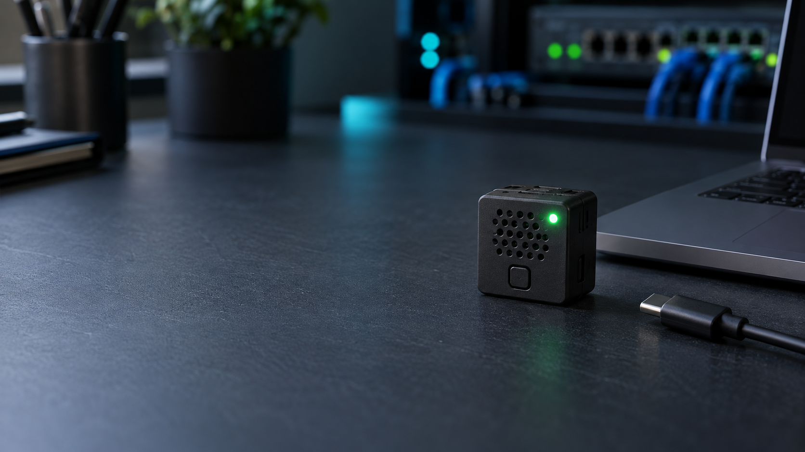
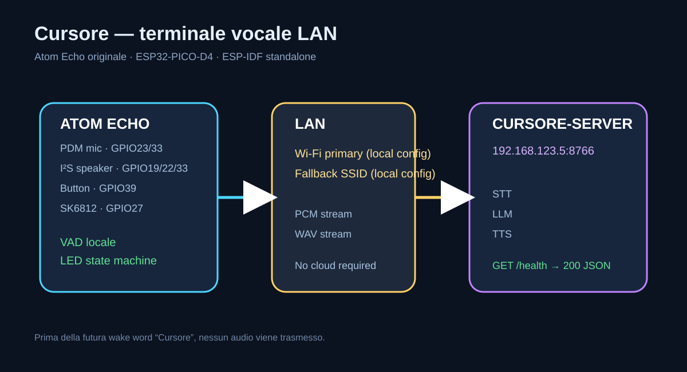

Wake word locale
“Cursore” viene riconosciuto sul dispositivo. Prima del rilevamento nessun audio viene trasmesso.
ATOM ECHO · ESP-IDF · LAN LOCALE
Cursore è il terminale vocale discreto di un assistente AI: la wake word vive sul dispositivo, l’audio attraversa soltanto la tua rete locale e il lavoro pesante resta sul server.
M5Stack Atom Echo · ESP32-PICO-D4 · 4 MB · no PSRAM · standalone

Visualizzazione concettuale · hardware originale M5Stack
UNA CATENA CHIARA
Il diagramma mostra il confine tra ciò che resta sull’Atom e ciò che viene elaborato dal backend Cursore.

“Cursore” viene riconosciuto sul dispositivo. Prima del rilevamento nessun audio viene trasmesso.
Il VAD locale invia PCM signed 16-bit, mono, 16 kHz senza accumulare l’intera frase nella RAM.
Il server produce STT, LLM e TTS; il WAV viene scaricato e riprodotto progressivamente.
IL LED RACCONTA LO STATO
Il pulsante è il toggle globale: una pressione breve abilita o silenzia l’assistente. Nessun push-to-talk.
IL TERMINALE
L’Atom Echo originale integra microfono, speaker, pulsante e LED in pochi centimetri. Cursore usa solo il modello con ESP32-PICO-D4: non AtomS3, non ESP32-S3.
PINOUT VERIFICATO
IL PROSSIMO PASSO
La wake word futura sarà un modello locale INT8, studiato per RAM, flash e CPU dell’ESP32 originale. microWakeWord e TensorFlow Lite Micro sono candidati tecnici; nessun servizio esterno è parte del requisito.
Leggi la valutazione tecnica ↗PRIVACY BY DESIGN
Niente audioSTANDALONE, RIPRODUCIBILE
Firmware ESP-IDF, build Docker, CI GitHub, documentazione hardware e diagrammi fanno parte della stessa pubblicazione.